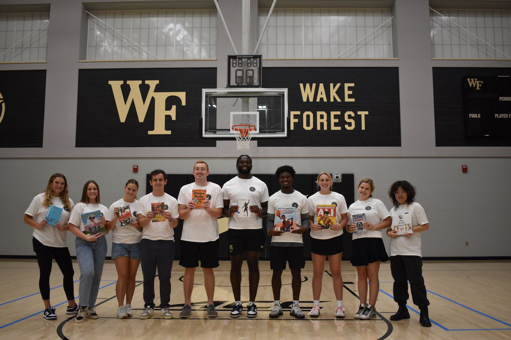
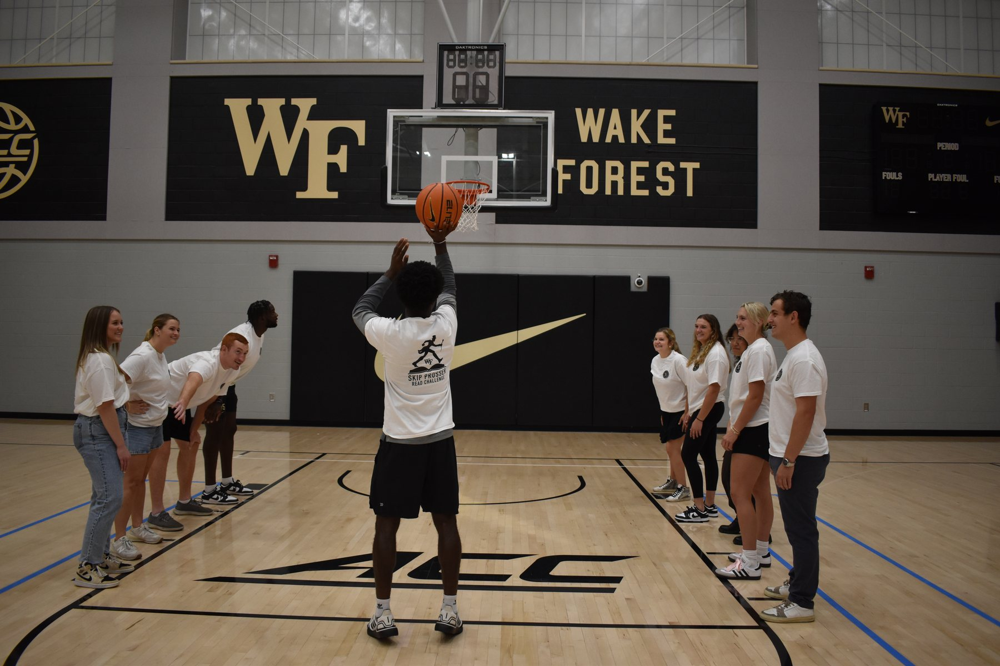
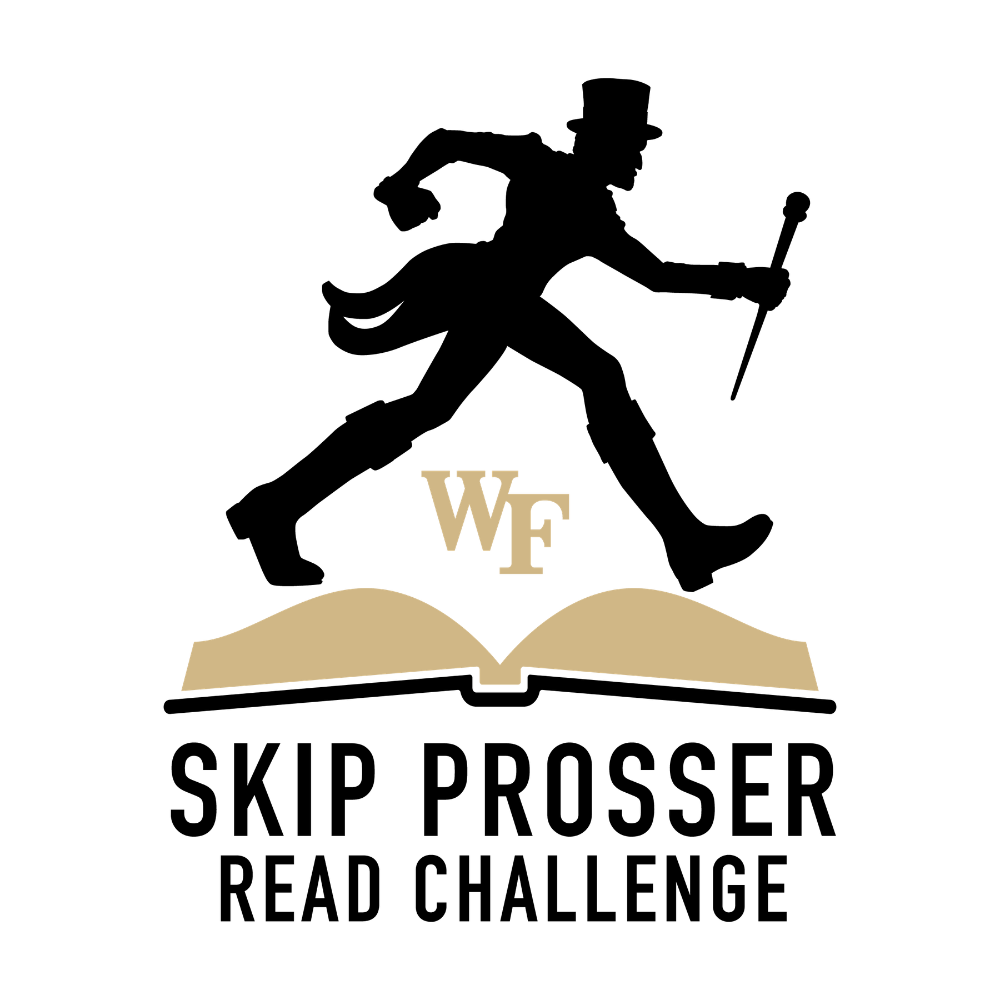

Reading confidence grows through connection.
Young students needed an encouraging environment where reading felt participatory and achievable rather than intimidating.
Community engagement · 2023
Supporting a community-based program that helps elementary school students strengthen reading confidence and engagement.

Young students needed an encouraging environment where reading felt participatory and achievable rather than intimidating.
I assisted with classroom activities, student interaction, event preparation, and day-to-day program support while reinforcing mentorship and positive youth development.
I helped create an approachable learning experience by responding to different confidence levels, celebrating progress, and keeping activities organized and engaging.
The experience taught me that impact is often built through consistency and attention. It strengthened my ability to communicate with empathy, coordinate with a team, and support people with different needs.

